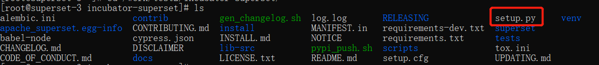
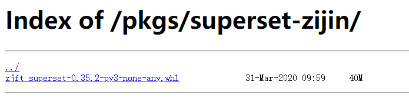
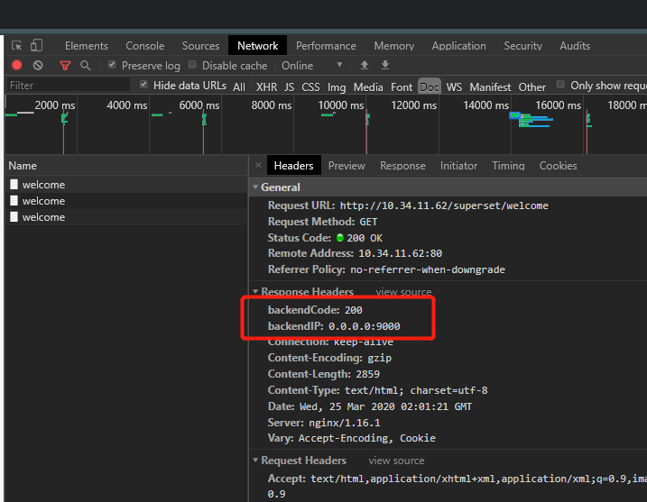
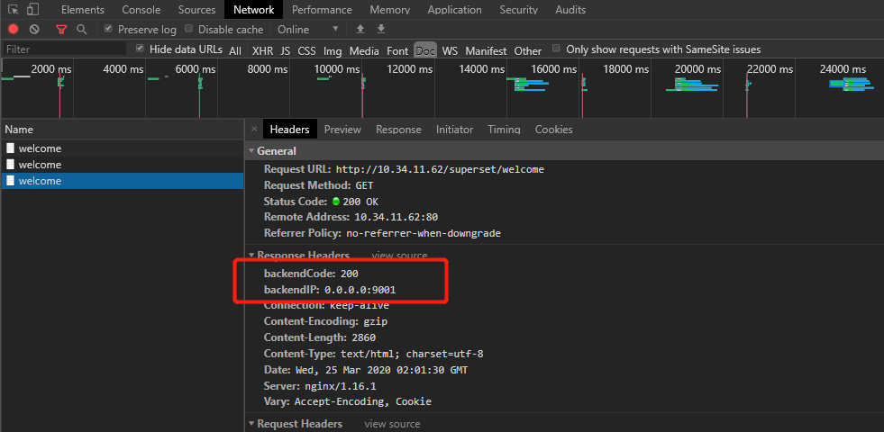

# 操作系统
# 软件依赖
- python3.6~
- pip~
- setuptools~
- nodejs 12.15.0~
# 实验环境
- centos-7-minimal
- python3.68
- setuptools~
- pip~
- nodejs 12.16.1~
# SuperSet 打包
Python 的模块或者源文件直接可以复制到目标项目目录中，就可以导入使用了。但是为了更多项目调用使用，或者共享给别人，就需要打包，或发布到网络，以便供人使用。目的也是为了复用。
# 修改 setpu.py
- 进入 superset 根目录
$ cd /work/test2/incubator-superset/ - 修改 setup.py 文件
找到下面代码vi setup.pyname 修改为二次开发项目的名称，也是上传到 Pipy 的包名，如果需要上传到 Pypi，命名前先在 pipy 查询一下防止重名。setup(name="apache-superset",
description=("A modern, enterprise-ready business intelligence web application"),
long_description=long_description,
long_description_content_type="text/markdown",
version=version_string,
packages=find_packages(),
include_package_data=True,
zip_safe=False,
scripts=["superset/bin/superset"],
install_requires=[
"backoff>=1.8.0",
"bleach>=3.0.2, <4.0.0",
---------------省略----------------
version 修改为二次开发项目的版本号
install_requires 下增加二次开发中需要用到的包setup(#修改name="zjft-superset",
description=("A modern, enterprise-ready business intelligence web application"),
long_description=long_description,
long_description_content_type="text/markdown",
#修改，本例没有修改版本号version=version_string,
packages=find_packages(),
include_package_data=True,
zip_safe=False,
scripts=["superset/bin/superset"],
install_requires=[
"backoff>=1.8.0",
"bleach>=3.0.2, <4.0.0",
---------------省略----------------
```
修改完后保存
```bash
#shift+: 进入命令模式:wq
# 编译前端
进入 asset 目录
cd /work/test2/incubator-superset/superset/assets编译
npm install
npm run build
# 开始打包
进入 superset 根目录
cd /work/test2/incubator-superset/开始打包，有两种方式可以选择
- 打包成 wheel (推荐)
python setup.py bdist_wheel
- 打包成 tar
python setup.py sdist
打包完成后会自动创建一个 dist 文件夹，里面存放打包好的文件
ls> zjft_superset-0.35.2-py3-none-any.whl zjft-superset-0.35.2.tar.gz- 打包成 wheel (推荐)
# SuperSet 分发
# 手动分发
将生成好的安装手动上传到服务器
# 网络分发
# 方式 1. 将包上传到自建的文件服务器

# 方式 2. 将包上传到 pypi
ps: 上传到 pypi 的包可以被所有人下载
- 首先进入 pypi 官网，注册一个账号
- 打开 cmd 命令行输入以下命令 安装 twine 第三方模块
pip install twine - 上传
期间如无配置文件会让你输入注册的用户名和密码$ cd /work/test2/incubator-superset/$ twine upload dist/*
# SuperSet 安装
# 创建 python 虚拟环境
python3 自带 venv 模块创建虚拟环境，使用虚拟环境隔离本身系统的环境，方便测试是否安装成功
- 创建虚拟环境
myven 为虚拟环境名，运行后会自动创建一个 myven 文件夹cd /opt/python3 -m venv venv myven
- 激活虚拟环境
cd /opt/. ./myven/bin/activate
激活虚拟环境后命令行将变为（myven）
# 手动分发安装方式
进入到安装文件目录，执行 pip 安装
pip install superset-0.35.2-py3-none-any.whl |
如果是打包 tar，则需要先解压
tar -zxvf zjft-superset-0.35.2.tar.gz | |
cd zjft-superset-0.35.2 | |
python setup.py install |
# 网络分发安装方式
如果是自建文件服务器，则
pip install http://10.34.1.9/pkgs/superset-zijin/zjft_superset-0.35.2-py3-none-any.whl |
如果是上传到 pipy 的包，则
pip install zjft-superset |
# 验证是否安装成功
如果安装过程无报错，运行下面命令启动服务器
superset run |
如果无报错则安装成功
# 部署 Superset 单机服务
Gunicorn (独角兽) 是一个 unix 上被广泛使用的高性能的 Python WSGI UNIX HTTP Server。和大多数的 web 框架兼容，并具有实现简单，轻量级，高性能等特点。
supset 可以运行在 nginx，tomcat，gunicorn 中，本例使用 gunicorn 作为服务器容器
- 安装相应 python 包
pip install geventpip install gunicorn - 启动服务-w: 进程的数量
gunicorn -w 2 -k gevent --timeout 60 -b 0.0.0.0:9000 --limit-request-line 0 --limit-request-field-size 0 superset:app
- k：工作模式，这里选择 gevent，如果选择其他工作模式需要安装其他 pythton 包
--timeout：超时秒数
- b: 访问地址
--limit-request-line：HTTP 请求行的最大大小，此参数用于限制 HTTP 请求行的允许大小，默认情况下，这个值为 4094。值是 0~8190 的数字。此参数可以防止任何 DDOS 攻击
--limit-request-field-size：限制 HTTP 请求中请求头的大小，默认情况下这个值为 8190。值是一个整数或者 0，当该值为 0 时，表示将对请求头大小不做限制
运行成功后打开 http://ip:9000 即可
# 部署 Superset 集群服务
# 安装 Nginx
$ sudo yum -y install nginx # 安装 nginx | |
$ sudo yum remove nginx # 卸载 nginx |
❌如果出现下面错误
[root@localhost yum.repos.d]# yum install nginx | |
已加载插件：fastestmirror, langpacks | |
Loading mirror speeds from cached hostfile | |
没有可用软件包 nginx。 | |
错误：无须任何处理 |
yum 添加 nginx 源
$ rpm -ivh http://nginx.org/packages/centos/7/noarch/RPMS/nginx-release-centos-7-0.el7.ngx.noarch.rpm |
# 测试 nginx 是否安装成功
service nginx status |
其他命令:
systemctl enable nginx # 设置开机启动 | |
service nginx start # 启动 nginx 服务 | |
service nginx stop # 停止 nginx 服务 | |
service nginx status # 查看 nginx 服务 | |
service nginx restart # 重启 nginx 服务 | |
service nginx reload # 重新加载配置，一般是在修改过 nginx 配置文件时使用。 |
# 启动 nginx
nginx 默认启动 80 端口，先确保 80 端口没有被占用
service nginx start |
打开 http://ip, 就能看见 Nginx 的 Hello world
Welcome to nginx!
If you see this page, the nginx web server is successfully installed and working. Further configuration is required.
For online documentation and support please refer to nginx.org.
Commercial support is available at nginx.com.
Thank you for using nginx.
# 修改 nginx 配置
nginx 的配置文件默认在 /etc/nginx/conf.d/default.conf, 修改该文件
vi /etc/nginx/conf.d/default.conf |
文件修改成以下内容
upstream web_server {
server 0.0.0.0:9000 weight=2;
server 0.0.0.0:9001 weight=1;
}
server {
listen 80;
server_name localhost;
#charset koi8-r;
#access_log /var/log/nginx/host.access.log main;
location / {
proxy_set_header Host $host;
proxy_set_header X-Real-IP $remote_addr;
proxy_set_header X-Forwraded-For $remote_addr;
proxy_pass http://web_server;
add_header backendIP $upstream_addr;
add_header backendCode $upstream_status;
}
#error_page 404 /404.html;
error_page 500 502 503 504 /50x.html;
location = /50x.html {
root /usr/share/nginx/html;
}
}
web_server 为需要集群的两个 superset 地址，weight 为轮询权重，这里的配置意思是三次请求，有两次会请求到 9000, 有一次回到 9001.
add_header 与 add_header 属性会把实际服务器的地址作为 header 返回，这里为了测试负载均衡是否有效，生产环境必须去掉
# 重启 Nginx
修改配置后必须重新加载配置文件
service nginx reload |
# 验证 Nginx 负载均衡
浏览器里按 f12 打开开发者工具然后访问 http://10.34.11.62/
连续按 ctrl+f5（强制清除缓存刷新）三次
可以看见前两次请求的都是 9000 端口的 superset

最后一次为 9001 端口的 superset

# Nginx 负载均衡失败解决方法
如果连续发送三次请求都只访问同一个 server 说明负载均衡出现问题，按下面顺序检查问题
- 确保集群里的 superset 都是可用的
- 确保配置文件正确并且已经重新加载配置文件
- 查看 nginx 错误日志
vi /var/log/nginx/error.log |
❌权限错误:
[crit] 2717#2717: *10 connect() to 127.0.0.1:9001 failed (13: Permission denied) while connecting to upstream, client: 10.34.11.33, server: 10.34.11.62, request: "GET / HTTP/1.1", upstream: "http://127.0.0.1:9001/", host: "10.34.11.62" |
原因：这是因为 SeLinux 的限制。
# 解决方案:
# 关闭 SeLinux
临时关闭（不用重启机器）：
setenforce 1 设置 SELinux 成为 enforcing 模式setenforce 0修改配置文件需要重启机器：
修改 /etc/selinux/config 文件
将 SELINUX=enforcing 改为 SELINUX=disabled
重启机器即可
# 执行下面的命令
setsebool -P httpd_can_network_connect 1 | |
``` |